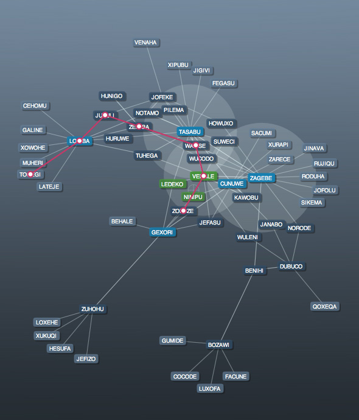
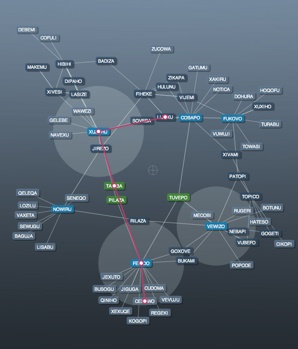

Graphing
Another network graphing library. This one is a lot more mature than Notwork or the ConceptNet Graphs in that it uses the Boost Graph Library for Python. BGL uses standarised mathematical algorithms for traversing graphs.


The Graph library for NodeBox has the following functionality:
Generic interface: the library can be used with any given set of data you supply. Simply add new nodes and connect them, the library figures out the rest by itself.
Visualisation of a network: uses a spring-force layout for networks together with some individual nudging for nodes. This means that the graph will always look orderly, and overlapping (and illegibility) of individual nodes is omitted.
Pathfinding: uses the Dijkstra-algorithm to compute the shortest path between two nodes. This means the library can be used to find out what is the strongest, shortest connection between two pieces of information in the network. For tougher pathfinding, the library uses Ant Colony optimisation. This last feature is still being worked on.
Clustering: the library indicates clusters of densely packed nodes, or nodes that get heavy traffic in paths between other nodes. This means the computer is able to find out which pieces of data in the network are related, or which are important links between pieces of information.
Templating: the visual style can be customized, from background colors and images to node colors and type.
Why this is useful? You could schematise Wikipedia and find the shortest path between two articles (i.e. find out how they relate conceptually) for example.
Created by Tom De Smedt